File: 000210.gt.txt (if the image is defective, simply delete all Arabic text and the line will be excluded)
أو بلد من البلدان.
File: 000211.gt.txt (if the image is defective, simply delete all Arabic text and the line will be excluded)
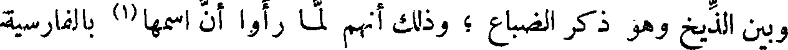
وبين الذيخ وهو ذكر الضباع ؛ وذلك أنهم لما رأوا أن اسمها(1) بالفارسية
File: 000212.gt.txt (if the image is defective, simply delete all Arabic text and the line will be excluded)
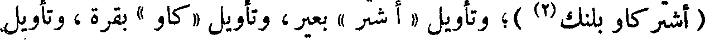
( أشتر كاو بلنك(2) )؛ وتأويل «أشتر» بعير ، وتأويل «كاو» بقرة ، وتأويل
File: 000213.gt.txt (if the image is defective, simply delete all Arabic text and the line will be excluded)
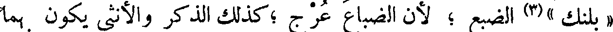
File: 000214.gt.txt (if the image is defective, simply delete all Arabic text and the line will be excluded)
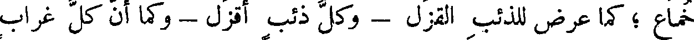
خماع ؛ كما عرض للذئب القزل - وكل ذئب أقزل - وكما أن كل غراب
File: 000215.gt.txt (if the image is defective, simply delete all Arabic text and the line will be excluded)
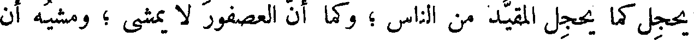
يحجل كما يحجل المقيد من الناس ؛ وكما أن العصفور لا يمشي ؛ ومشيه أن
File: 000216.gt.txt (if the image is defective, simply delete all Arabic text and the line will be excluded)
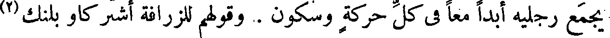
يجمع رجليه أبدا معا في كل حركة وسكون . وقولهم للزرافة أشتر كاو بلنك(3)
File: 000217.gt.txt (if the image is defective, simply delete all Arabic text and the line will be excluded)
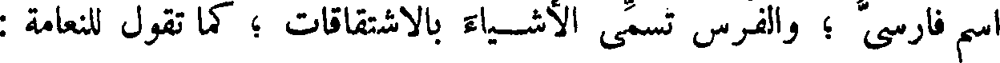
اسم فارسي ؛ والفرس تسمي الأشياء بالاشتقاقات ؛ كما تقول للنعامة :
File: 000218.gt.txt (if the image is defective, simply delete all Arabic text and the line will be excluded)
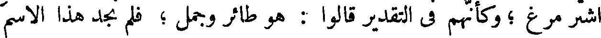
اشتر مرغ ؛ وكأنهم في التقدير قالوا : هو طائر وجمل ؛ فلم نجد هذا الاسم
File: 000219.gt.txt (if the image is defective, simply delete all Arabic text and the line will be excluded)
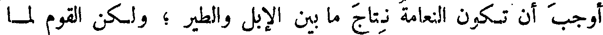
أوجب أن تكون النعامة نتاج ما بين الإبل والطير ؛ ولكن القوم لما
File: 000220.gt.txt (if the image is defective, simply delete all Arabic text and the line will be excluded)
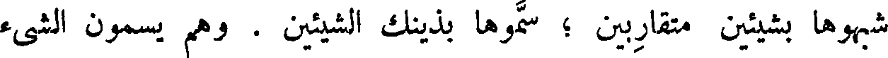
شبهوها بشيئين متقاربين ؛ سموها بذينك الشيئين . وهم يسمون الشيء
File: 000221.gt.txt (if the image is defective, simply delete all Arabic text and the line will be excluded)
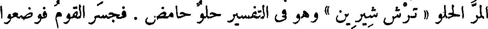
المر الحلو « ترش شيرين » وهو في التفسير حلو حامض . فجسر القوم فوضعوا
File: 000222.gt.txt (if the image is defective, simply delete all Arabic text and the line will be excluded)
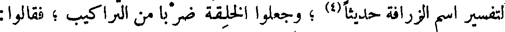
لتفسير اسم الزرافة حديثا(4) ؛ وجعلوا الخلقة ضربا من التراكيب ؛ فقالوا:
File: 000223.gt.txt (if the image is defective, simply delete all Arabic text and the line will be excluded)
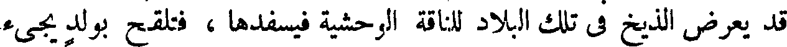
قد يعرض الذيخ في تلك البلاد للناقة الوحشية فيسفدها ، فتلقح بولد يجيء
File: 000224.gt.txt (if the image is defective, simply delete all Arabic text and the line will be excluded)
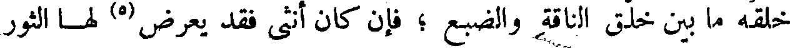
خلقه ما بين خلق الناقة والضبع ؛ فإن كان أنثى فقد يعرض(5) لها الثور
File: 000225.gt.txt (if the image is defective, simply delete all Arabic text and the line will be excluded)
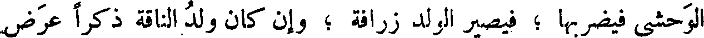
الوحشي فيضربها ؛ فيصير الولد زرافة ؛ وإن كان ولد الناقة ذكرا عرض
File: 000226.gt.txt (if the image is defective, simply delete all Arabic text and the line will be excluded)
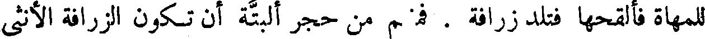
File: 000227.gt.txt (if the image is defective, simply delete all Arabic text and the line will be excluded)
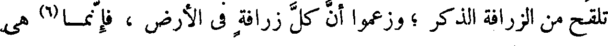
تلقح من الزرافة الذكر ؛ وزعموا أن كل زرافة في الأرض ، فإنما(6) هي
File: 000228.gt.txt (if the image is defective, simply delete all Arabic text and the line will be excluded)

لا تورثوا الابن من المال ، إلا ما يكون عونا له على طلب المال ، واغذوه
File: 000229.gt.txt (if the image is defective, simply delete all Arabic text and the line will be excluded)
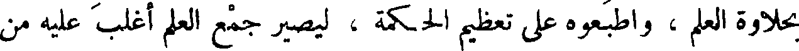
بحلاوة العلم ، واطبعوه على تعظيم الحكمة ، ليصير جمع العلم أغلب عليه من
File: 000230.gt.txt (if the image is defective, simply delete all Arabic text and the line will be excluded)
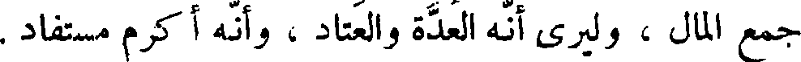
جمع المال ، وليرى أنه العدة والعتاد ، وأنه أكرم مستفاد .
File: 000231.gt.txt (if the image is defective, simply delete all Arabic text and the line will be excluded)
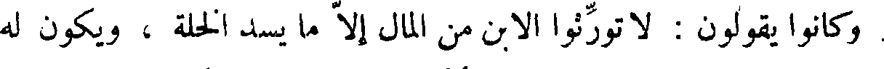
وكانوا يقولون : لا تورثوا الابن من المال إلا ما يسد الخلة ، ويكون له
File: 000232.gt.txt (if the image is defective, simply delete all Arabic text and the line will be excluded)
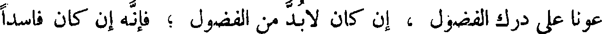
عونا على درك الفضول ، إن كان لا بد من الفضول ؛ فإنه إن كان فاسدا
File: 000233.gt.txt (if the image is defective, simply delete all Arabic text and the line will be excluded)

زادت تلك الفضول في فساده ، وإن كان صالحا كان فيما أورثتموه من العلم
File: 000234.gt.txt (if the image is defective, simply delete all Arabic text and the line will be excluded)
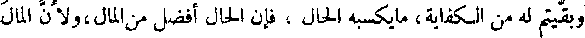
وبقيتم له من الكفاية، مايكسبه الحال ، فإن الحال أفضل من المال،ولأن المال
File: 000235.gt.txt (if the image is defective, simply delete all Arabic text and the line will be excluded)
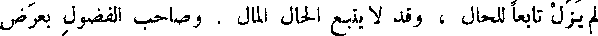
لم يزل تابعا للحال ، وقد لا يتبع الحال المال . وصاحب الفضول بعرض
File: 000236.gt.txt (if the image is defective, simply delete all Arabic text and the line will be excluded)
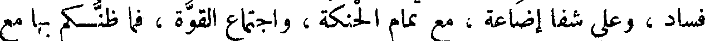
فساد ، وعلى شفا إضاعة ، مع تمام الحنكة ، واجتماع القوة ، فما ظنكم بها مع
File: 000237.gt.txt (if the image is defective, simply delete all Arabic text and the line will be excluded)
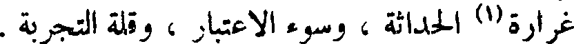
غرارة(١) الحداثة ، وسوء الاعتبار ، وقلة التجربة .
File: 000238.gt.txt (if the image is defective, simply delete all Arabic text and the line will be excluded)
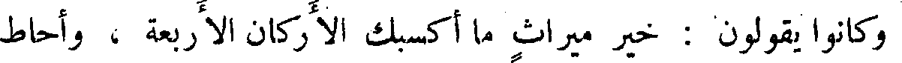
وكانوا يقولون : خير ميراث ما أكسبك الأركان الأربعة ، وأحاط
File: 000239.gt.txt (if the image is defective, simply delete all Arabic text and the line will be excluded)
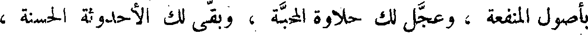
بأصول المنفعة ، وعجل لك حلاوة المحبة ، وبقى لك الأحدوثة الحسنة ،
To Save: `Ctrl+s`, make sure to choose `Webpage, complete`!